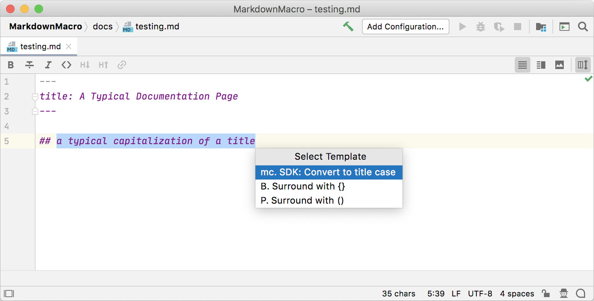
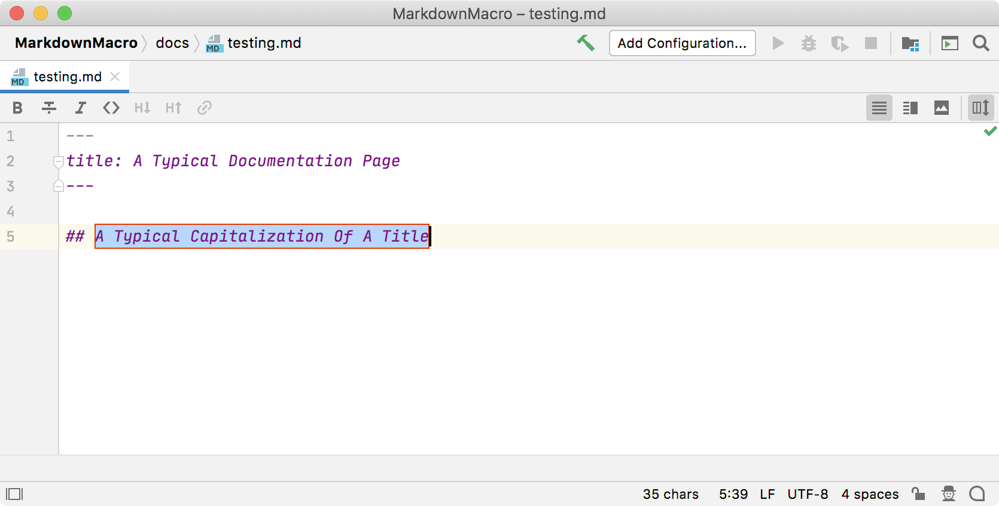

Creating New Functions for Live Templates
The Predefined Functions are the building blocks for creating Parameterized Templates and Surround Templates. However, sometimes the Predefined Functions are not enough.
This tutorial illustrates how to add custom functions to an IntelliJ Platform plugin and make them available for use by Live Templates.
As an example, a function is created to convert a selection to Title Case.
Refer to the SDK code sample live_templates.
Implementing a New Function
Under the hood, the predefined functions for Live Templates are called macros.
A new custom function for Live Templates is implemented in TitleCaseMacro, which extends MacroBase.
Three TitleCaseMacro methods are of particular interest:
- The
TitleCaseMacro()constructor passes the name and description of the macro to the parent constructor. - The
isAcceptableInContext()method tests whether the macro is available in the current context. The test relies on theMarkdownContextobject previously defined in thelive_templatesplugin. - The
calculateResult()method gets invoked when the titleCase function is used in a Live Template. The text to be capitalized is retrieved from the Live Template and converted to Title Case.
// Copyright 2000-2020 JetBrains s.r.o. and other contributors. Use of this source code is governed by the Apache 2.0 license that can be found in the LICENSE file.
package org.intellij.sdk.liveTemplates;
import com.intellij.codeInsight.template.*;
import com.intellij.codeInsight.template.macro.MacroBase;
import com.intellij.openapi.util.text.StringUtil;
import org.jetbrains.annotations.NotNull;
public class TitleCaseMacro extends MacroBase {
public TitleCaseMacro() {
super("titleCase", "titleCase(String)");
}
/**
* Strictly to uphold contract for constructors in base class.
*/
private TitleCaseMacro(String name, String description) {
super(name, description);
}
@Override
protected Result calculateResult(@NotNull Expression[] params, ExpressionContext context, boolean quick) {
// Retrieve the text from the macro or selection, if any is available.
String text = getTextResult(params, context, true);
if (text != null) {
if (text.length() > 0) {
// Capitalize the start of every word
text = StringUtil.toTitleCase(text);
}
return new TextResult(text);
}
return null;
}
@Override
public boolean isAcceptableInContext(TemplateContextType context) {
// Might want to be less restrictive in future
return (context instanceof MarkdownContext);
}
}
Adding a Live Template
Using the procedures previously discussed for Template Creation and Export the Live Template, add a Live Template to the Markdown.xml file for the plugin.
The XML representation of an example Live Template using the new titleCase function is listed below.
There is only one variable, TITLE.
The expression for TITLE evaluates to the titleCase function provided by the plugin.
The argument to the titleCase function is SELECTION, which tells the IntelliJ Platform to operate on the current selection.
<template name="mc"
value="$TITLE$"
description="SDK: Convert to title case"
toReformat="true"
toShortenFQNames="false">
<variable name="TITLE" expression="titleCase(SELECTION)" defaultValue="the quick brown fox" alwaysStopAt="true" />
<context>
<option name="MARKDOWN" value="true" />
</context>
</template>
Register Extension Point
Using the com.intellij.liveTemplateMacro extension point, register the implementation with the IntelliJ Platform.
<extensions defaultExtensionNs="com.intellij">
<liveTemplateMacro implementation="org.intellij.sdk.liveTemplates.TitleCaseMacro"/>
</extensions>
Check Plugin
Now verify the plugin is working correctly.
- Run the plugin in a Development Instance.
- Create a new file
testing.mdand enter several words in lower case. - Highlight the text and enter ⌥⌘J to open the Select Template popup. Confirm that the SDK: Convert to title case is available in the popup, and select it.

Test that the Live Template works by entering m or return. The text will change to have each word capitalized:
